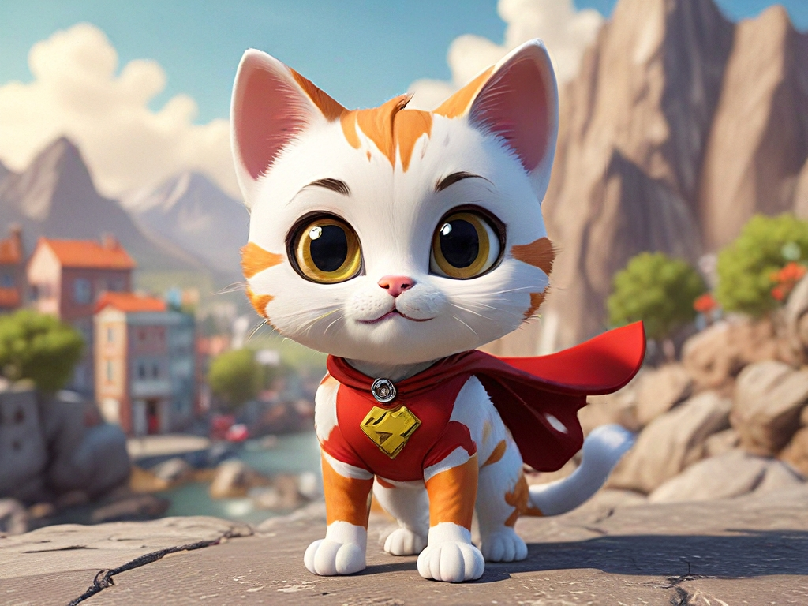

画像生成のヒント
AiCassoを使って画像を作成するのは簡単で楽しいです！非常に正確である必要はなく、文法が完璧である必要もありません。思い描いていることを説明するだけで、AiCassoが残りを処理します。特定のスタイルを探している場合や、風景、ポートレート、正方形の画像が欲しい場合でも、AiCassoはあなたが何を求めているのかを理解するのに十分賢いです。文法の間違いや指示に正確に従わなくても大丈夫です。
例:
プロンプト: "夕日を背景にした山のある静かな湖を作成してください。古い素敵な絵のように、正方形の画像で、動物やボートはなしで。"
結果: AiCassoは、バロックスタイルにインスパイアされた美しい山の湖を夕日で生成します。動物やボートはなく、正方形のフォーマットになります。
プロンプト: "抽象アートのような明るい色のクレイジースプラッシュ、ポートレートサイズ、形や物体はなしで。"
結果: AIは、認識可能な形がない鮮やかな色の抽象的なスプラッシュを生成し、抽象表現主義スタイルに従い、ポートレートレイアウトになります。
プロンプト: "スーパーヒーローとしての楽しい漫画の猫、3Dスタイル、風景、かわいくて怖くないように。"

結果: これは、スーパーヒーローの衣装を着た愛らしい3D漫画の猫を作成し、遊び心があり、怖くない雰囲気で、風景フォーマットで表示されます。
スタイルの強化
どのスタイルを選べばいいか分からないですか？心配しないでください！文法的に正しくなくても、思いついたスタイルを言及するだけで、AiCassoが利用可能なスタイルのリストから理解します。
- デフォルト: 特定の芸術的影響なしのバランスの取れた中立的なスタイル。
- 強化: 詳細と全体的な美学をわずかに改善します。
- シネマティックディーバ: 強い照明コントラストでドラマチックな映画のような効果を追加します。
- 抽象表現主義: 抽象的な形と鮮やかな色のスプラッシュを強調します。
- アカデミア: 画像に学術的で古典的なタッチを加えます。
- アクションフィギュア: アクションフィギュアの誇張されたダイナミックなスタイルで画像を生成します。
- 愛らしい3Dキャラクター: かわいくて漫画的な3Dキャラクターを生成します。
- 愛らしいカワイイ: カワイイ文化に典型的なかわいく魅力的なスタイルを強調します。
- アールデコ: アールデコ時代の幾何学的で装飾的なスタイルを使用します。
- アールヌーボー: アールヌーボーに典型的な流れるような線と自然にインスパイアされた要素を追加します。
- アストラルオーラ: 神秘的で異世界的な雰囲気を作り出します。
- アバンギャルド: 革新的で実験的な芸術表現に焦点を当てます。
- バロック: バロック時代のドラマチックで詳細なスタイルを使用します。
- バウハウススタイルポスター: バウハウスのミニマリストで機能的なデザイン原則を反映します。
- 設計図スキーマティックドローイング: 技術的な設計図に似た画像を生成します。
- 風刺画: 誇張された漫画的なポートレートを生成します。
- セルシェーディングアート: セルシェーディングアニメーションに典型的な平坦で大胆な色を使用します。
- キャラクターデザインシート: アニメーションに適したクリーンで明確なキャラクターデザインに焦点を当てます。
- 古典主義アート: 古典古代の洗練された理想化されたアートスタイルを模倣します。
- カラーフィールドペインティング: 単一の色の大きな面を特徴とし、色の平面を作成します。
- 色鉛筆アート: 色鉛筆の描画の質感と外観を模倣します。
- 概念アート: 美的または物質的な関心よりもアイデアや概念を優先します。
- 構成主義: 構成主義運動の産業的で幾何学的なスタイルを反映します。
- キュビズム: 物体を幾何学的な形に分解し、抽象的な形で提示します。
- ダダイズム: 不条理、非合理性、反芸術の美学を強調します。
- ダークファンタジー: 暗く不気味な要素を持つムーディーでゴシックな雰囲気を作り出します。
- ダークムーディーな雰囲気: 低照明と影を使用してムーディーな雰囲気を作り出します。
- DMTアート: DMT体験にインスパイアされた鮮やかでサイケデリックなビジュアルを特徴とします。
- 落書きアート: 幻想的で遊び心のある描画スタイルを強調し、しばしば複雑で詳細です。
- ダブルエクスポージャー: 2つの画像を1つに組み合わせ、超現実的で層状の効果を作り出します。
- 滴るペイントスプラッター: スプラッターしたり滴ったりするペイントを使用して、動的で混沌とした構図を作成します。
- 表現主義: 現実的な表現よりも感情表現を優先し、しばしば大胆な色とドラマチックな形を使用します。
- 色あせたポラロイド写真: 色あせたポラロイド写真の古びたノスタルジックな外観を模倣します。
- フォーヴィスム: フォーヴィスト運動にインスパイアされた鮮やかで不自然な色と大胆なブラシワークを使用します。
- フラット2D: 最小限のシェーディングや深さでシンプルでフラットなデザインを強調し、しばしば漫画スタイルです。
- フォートナイトスタイル: フォートナイトビデオゲームに典型的な鮮やかで漫画的なアートスタイルを反映します。
- 未来主義: 動的な動き、エネルギー、未来の技術の描写に焦点を当てます。
- グリッチコア: デジタルエラーやグリッチを芸術スタイルとして強調し、しばしば歪んだビジュアルを使用します。
- グローファイ: 柔らかく輝く照明を使用して、夢のようなエーテル的な雰囲気を作り出します。
- グーギースタイル: 20世紀中頃の未来的で宇宙時代のデザイントレンドを反映します。
- グラフィティアート: グラフィティや都市の壁画に典型的な鮮やかでストリートスタイルの美学を使用します。
- ハーレムルネサンスアート: ハーレムルネサンスの豊かな文化的および芸術的表現を反映します。
- ハイファッション: 洗練された、洗練された、アバンギャルドな美学を強調します。
- 理想的: 平和で穏やかで、しばしば田園的な雰囲気を作り出します。
- 印象派: 緩いブラシワークと鮮やかな色を使用して、光と雰囲気の効果を捉えます。
- インフォグラフィックドローイング: 情報を視覚的に提示するための明確で視覚的に魅力的なレイアウトを強調します。
- インク滴りドローイング: 描画に流れるような滴る効果を作り出すためにインクを使用します。
- 日本のインクドローイング: 日本のインクアートの伝統的な筆使いの技術と美学を模倣します。
- ノーリング写真: 上から撮影された物体の整然とした配置を強調します。
- 明るく陽気な雰囲気: 明るい色と照明を使用して、陽気で uplifting な雰囲気を作り出します。
- ロゴデザイン: クリーンで認識可能なロゴとブランディング要素の作成に焦点を当てます。
- 豪華なエレガンス: 洗練さと贅沢を強調し、しばしば豊かな質感と素材を使用します。
- マクロ写真: 極端なクローズアップに焦点を当て、肉眼では見えない複雑な詳細を明らかにします。
- マンダラアート: 伝統的なマンダラデザインにインスパイアされた複雑で対称的なパターンを作成します。
- マーカードローイング: マーカードローイングに典型的な大胆で鮮やかな線と色を模倣します。
- 中世主義: 中世の時代のアートとデザインの美学を反映します。
- ミニマリズム: シンプルさと形を本質的な要素に減らすことを強調します。
- ネオバロック: バロック時代の豪華でドラマチックなスタイルを現代的な影響で復活させます。
- ネオビザンチン: ビザンチン帝国の装飾的で宗教的なアートスタイルと現代的な要素を組み合わせます。
- ネオ未来主義: 未来的なデザインに焦点を当て、しばしば洗練されたハイテクな美学を持ちます。
- ネオ印象派: ネオ印象派運動にインスパイアされた小さく明確な色の点を使用して画像を作成します。
- ネオロココ: ロココ時代の複雑で装飾的なスタイルを現代的なひねりで復活させます。
- 新古典主義: 古典古代のアートとデザインの美学を模倣し、調和とシンプルさを強調します。
- オプアート: 幾何学的なパターンとコントラストを使用して視覚的な錯覚や効果を作り出します。
- 装飾的で複雑: 装飾に焦点を当てた非常に詳細で複雑なデザインに焦点を当てます。
- 鉛筆スケッチドローイング: 鉛筆スケッチの質感と外観を模倣します。
- ポップアート: 大衆文化やマスメディアにインスパイアされた大胆な色とイメージを使用します。
- ロココ: ロココ時代の複雑で装飾的なアートスタイルを反映し、軽やかさと優雅さを強調します。
- シルエットアート: 光と影の強いコントラストを使用して大胆なシルエットベースの画像を作成します。
- シンプルベクターアート: ベクターアートに典型的なクリーンで幾何学的な形とフラットな色を強調します。
- スケッチアップ: SketchUpソフトウェアを使用して作成された3Dモデルの外観と感触を模倣します。
- スチームパンク: ヴィクトリア時代の美学と蒸気駆動の技術を組み合わせ、レトロフューチャリスティックなスタイルを作り出します。
- シュルレアリスム: 現実と夢のようなイメージをブレンドして、シュールで幻想的なシーンを作り出します。
- シュプレマティズム: 基本的な幾何学的形状と限られたカラーパレットに焦点を当て、シュプレマティスト運動にインスパイアされます。
- テラゲン: テラゲンソフトウェアを使用して作成されたリアルなコンピュータ生成の風景を模倣します。
- 静かなリラックスした雰囲気: 柔らかい色と落ち着いたイメージを使用して、平和で穏やかな環境を作り出します。
- ステッカーデザイン: ステッカーに適した遊び心のある漫画的な画像の作成に焦点を当てます。
- 鮮やかなリムライト: 主題の周りに明るいリムライティングを強調し、印象的で鮮やかな効果を作り出します。
- ボリューメトリックライティング: 光のビームと大気効果を使用して深さと次元を作り出します。
- 水彩画: 水彩画の柔らかく流れるような質感を模倣します。
- 幻想的で遊び心のある: 軽やかで想像力豊かで、しばしば風変わりなイメージに焦点を当てます。
- シャープ: 明瞭さとエッジの定義を強化し、より鮮明な外観を作り出します。
- 傑作: 高品質で詳細な洗練された芸術的成果を強調します。
- 写真: リアルで生き生きとした写真の質を目指します。
- ネガティブ: 色を反転させて写真のネガティブ効果を作り出します。
- 広告 - 広告: 広告に適したクリーンでプロフェッショナルなビジュアルに焦点を当てます。
- 広告 - 自動車: 動的で洗練された自動車広告のためのビジュアルスタイルを調整します。
- 広告 - 企業: 企業環境に適した洗練されたプロフェッショナルなデザインを強調します。
- 広告 - ファッションエディトリアル: ファッションエディトリアルで使用されるスタイリッシュでハイファッションな外観を強調します。
- 広告 - 食品写真: 食品写真に典型的な鮮やかで食欲をそそる外観のために画像を最適化します。
- 広告 - グルメ食品写真: グルメ食品写真の豊かで詳細な美学を強調します。
- 広告 - ラグジュアリー: ラグジュアリーブランドに適した豪華で高級なスタイルに焦点を当てます。
- 広告 - 不動産: 不動産広告に典型的なクリーンで魅力的なビジュアルを強調します。
- 広告 - 小売: 小売広告に適した魅力的で消費者志向のスタイルを強調します。
- ハイパーリアリズム: 非常に詳細で生き生きとした視覚スタイルを目指します。
- ポイントillism: ポワンティリズム運動にインスパイアされた小さく明確な色の点を使用して画像を作成します。
- サイケデリック: サイケデリックアートにインスパイアされた鮮やかな色と超現実的なビジュアルを強調します。
- ルネサンス: ルネサンスアートの調和の取れた古典的なスタイルを反映します。
- タイポグラフィ: テキストとフォントの創造的で芸術的な使用に焦点を当てます。
- 未来的なバイオメカニカル: 未来的でバイオメカニカルな要素を組み合わせて、高度な技術的で有機的なスタイルを作り出します。
- 未来的なバイオメカニカルサイバーパンク: バイオメカニカルとサイバーパンクの美学を融合させ、 gritty で未来的な外観を作り出します。
- 未来的なサイバネティック: 高度な技術的なサイバネティックビジュアルに焦点を当てます。
- 未来的なサイバネティックロボット: 未来的なエッジを持つロボットとサイバネティックなデザインを強調します。
- 未来的なサイバーパンクシティスケープ: サイバーパンクアートに典型的な gritty でネオンの灯る都市景観を反映します。
- 未来的なサイエンスフィクション: 未来的でサイエンスフィクションにインスパイアされた美学に焦点を当てます。
- 未来的なレトロサイバーパンク: レトロとサイバーパンクの要素を組み合わせて、ノスタルジックでありながら未来的なスタイルを作り出します。
- 未来的なレトロ: 未来的なビジュアルとレトロなデザイン要素を融合させます。
- 未来的なバポーウェーブ: バポーウェーブアートに典型的なノスタルジックで超現実的なビジュアルを強調します。
- ゲームバブル: カジュアルゲームでよく見られる遊び心のあるバブル状の美学に焦点を当てます。
- ゲームサイバーパンク: ゲームデザイン要素とサイバーパンクの美学を融合させます。
- ゲームファイティング: 格闘ゲームに典型的なダイナミックで激しいスタイルを反映します。
- ゲームGTA: グランドセフトオートゲームに典型的な gritty で都市的なスタイルを模倣します。
- ゲームマリオ: マリオゲームに典型的な鮮やかで漫画的なスタイルに焦点を当てます。
- ゲームマインクラフト: マインクラフトに典型的なブロック状でピクセル化されたスタイルを模倣します。
- ゲームポケモン: ポケモンゲームに典型的な鮮やかでアニメにインスパイアされたスタイルを反映します。
- ゲームレトロアーケード: レトロアーケードゲームに典型的なノスタルジックでピクセル化されたスタイルを強調します。
- ゲームRPGファンタジー: RPGゲームに典型的な詳細でファンタジーにインスパイアされた美学を反映します。
- ゲームストラテジー: ストラテジーゲームに典型的なクリーンで機能的なデザインに焦点を当てます。
- ゲームストリートファイター: ストリートファイターゲームに典型的な大胆でダイナミックなスタイルを模倣します。
- ゲームゼルダ: ゼルダゲームに典型的なファンタジーにインスパイアされたスタイルを反映します。
- その他建築: クリーンで正確な建築レンダリングに焦点を当てます。
- その他ディスコ: ディスコ文化に典型的な鮮やかでネオンの灯る美学を強調します。
- その他夢の風景: 超現実的で夢のような環境を作り出します。
- その他ディストピア: ディストピアの設定に典型的な gritty で bleak なビジュアルを反映します。
- その他おとぎ話: おとぎ話に典型的な幻想的で魔法の要素を強調します。
- その他ゴシック: ゴシックアートと建築に典型的な暗く装飾的なスタイルを反映します。
- その他グランジ: グランジ文化に典型的な gritty で生の美学を強調します。
- その他ホラー: ホラーに典型的な暗く不気味で不安を感じさせるビジュアルに焦点を当てます。
- その他カワイイ: カワイイ文化に典型的なかわいく魅力的なスタイルを反映します。
- その他ラブクラフト的: ラブクラフト的なフィクションに典型的な不気味で宇宙的な恐怖を強調します。
- その他マカーブル: 暗く不気味で不安を感じさせるテーマに焦点を当てます。
- その他マンガ: マンガに典型的な大胆でダイナミックなスタイルを模倣します。
- その他メトロポリス: 現代の大都市に典型的な洗練された都市の美学を反映します。
- その他ミニマリスト: シンプルさと形を本質的な要素に減らすことを強調します。
- その他モノクロ: 単一の色のさまざまな色合いで作成された画像に焦点を当てます。
- その他海洋: 海洋テーマに典型的な海事にインスパイアされた美学を反映します。
- その他宇宙: 宇宙の設定に典型的な広大で異世界的なビジュアルを強調します。
- その他ステンドグラス: ステンドグラスアートに典型的な複雑でカラフルなデザインを模倣します。
- その他テックウェアファッション: テックウェアファッションに典型的な未来的で機能的な美学に焦点を当てます。
- その他部族: 部族アートに典型的な大胆で文化的な美学を反映します。
- その他ゼンタングル: ゼンタングルアートに典型的な複雑で繰り返しのパターンを強調します。
- ペーパークラフトコラージュ: 切り紙を使用して層状でテクスチャのあるコラージュを作成します。
- ペーパークラフトフラットペーパーカット: フラットで切り紙のデザインを強調します。
- ペーパークラフト切り紙: 切り紙に典型的な複雑で折りたたまれたデザインに焦点を当てます。
- ペーパークラフトペーパーマシェ: ペーパーマシェを使用してテクスチャのある三次元の形を作成します。
- ペーパークラフトペーパーキュイリング: ペーパーキュイリングに典型的な繊細で巻かれた紙のデザインを強調します。
- ペーパークラフトペーパーカットコラージュ: 切り紙の要素を組み合わせて層状のコラージュを作成します。
- ペーパークラフトペーパーカットシャドーボックス: 層状の切り紙を使用して三次元のシャドーボックスを作成します。
- ペーパークラフトスタックペーパーカット: 層状で積み重ねられた紙のデザインに焦点を当てます。
- ペーパークラフト厚い層状ペーパーカット: 厚い切り紙デザインに典型的な次元的で層状の外観を強調します。
- フォトエイリアン: 超現実的で異星的なビジュアルに焦点を当てます。
- フォトフィルムノワール: フィルムノワールに典型的な暗くムーディーな美学を強調します。
- フォトグラマー: グラマー写真に典型的な洗練されたスタイリッシュな外観を強調します。
- フォトHDR: 高ダイナミックレンジ（HDR）を使用して、広範囲の光と色を持つ画像を作成します。
- フォトiPhone写真: iPhone写真に典型的なクリーンで現代的なスタイルを模倣します。
- フォトロングエクスポージャー: ロングエクスポージャーを使用して動的で動きのぼやけた効果を作り出します。
- フォトネオンノワール: ネオンの照明とノワールの暗くムーディーな美学を組み合わせます。
- フォトシルエット: 光と影の強いコントラストを使用してシルエットベースの画像を作成します。
- フォトティルトシフト: ティルトシフト効果を使用してミニチュアのようなトイのような外観を作り出します。
- 3Dモデル: 3Dモデルに典型的なクリーンで詳細な外観に焦点を当てます。
- アナログフィルム: アナログフィルム写真に典型的な粒状でテクスチャのある外観を模倣します。
- アニメ: アニメに典型的な鮮やかでダイナミックなスタイルを強調します。
- シネマティック: 強い照明と構図でドラマチックな映画のような効果を作り出します。
- コミックブック: コミックブックアートに典型的な大胆な線と鮮やかな色を使用します。
- クラフトクレイ: クレイモデルのテクスチャのある手作りの外観を模倣します。
- デジタルアート: クリーンで洗練されたデジタルアートワークに焦点を当てます。
- ファンタジーアート: ファンタジーアートに典型的な詳細で想像力豊かなビジュアルを強調します。
- アイソメトリック: アイソメトリックな視点を使用して三次元の外観を作り出します。
- ラインアート: 詳細な描画を作成するためにクリーンで鮮明な線に焦点を当てます。
- ローポリ: ミニマリストで幾何学的な外観を作成するためにローポリゴンの3Dモデルを使用します。
- ネオンパンク: ネオンの照明とサイバーパンクの gritty な美学を組み合わせます。
- 折り紙: 折り紙に典型的な複雑で折りたたまれたデザインに焦点を当てます。
- 写真: リアルで生き生きとしたビジュアルを目指します。
- ピクセルアート: ピクセル化されたデザインを使用してレトロなビデオゲームにインスパイアされた外観を作成します。
- テクスチャ: 視覚的な深さを高めるために豊かで詳細なテクスチャに焦点を当てます。